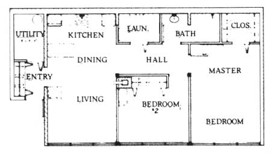
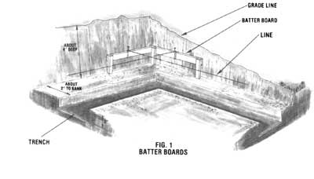
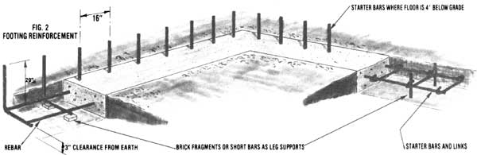
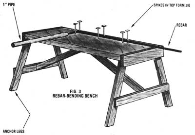
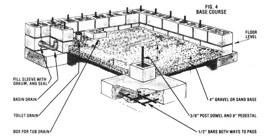
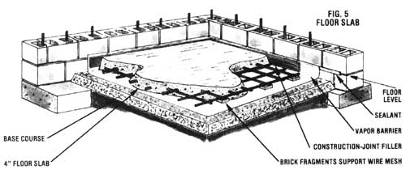

Follow an architect as he leads us through the planning, pouring, and pounding involved in ...
All too many of us have found that building an energy-efficient home seems to be a dream ... a fantasy that's kept just out of reach by escalating prices and high interest rates. Of course, MOTHER has long been exploring ways of breaking this vicious circle of waste, and one inventor of solutions-whose work we've shown you before (starting back in issue 67) ?is architect Angus W Macdonald. Angus has developed a number of housing designs that apply low-cost building techniques to passive solar, earth-tempered homes ... and he's agreed to relate, in a series of articles that will span at least six issues of MOTHER, much of what he's learned about planning and building such structures. The series will follow the actual construction of one of the architect's standard designs-Sun Cottage-and will include photos and illustrations of each step.
In our last issue, we covered budgeting and cost control ... and in this installment, we'll discuss the forming, pouring, and laying of the footings, foundation, and floor slab.
The most critical factor in the construction of any building is proper measurement ... because errors made at this point will be very costly later on if (for example) manufactured items-such as doors, windows, and cabinetry ?fail to fit into the spaces allotted for them. What's more, when building a dwelling like the Sun Cottage, in which a structural kit must fit into a masonry shell, it's even more important to pay careful attention to the tape measure. So don't rush ahead with trenching or pouring concrete until you're absolutely sure of the dimensions you've laid out on the ground!
While you're at it, you should also double-check your home-to-be's location and orientation . . . to make certain that you've allowed room for services, access, and future expansion (and to insure that you're not encroaching on any setback requirements your lot may have). Make sure, too, that your floor elevation will allow for proper waste-pipe slope to your septic tank or sewer connection. And remember, the excavation depth itself will be eight inches below floor level ... and the bottom must be as flat as possible, while sloping slightly toward the front to prevent standing water when (not if) a rainstorm hits during construction.
Most contractors "line out" (that's building lingo for laying out with a string or line) a structure by placing "batter boards" (explained later) at the points where the corners will be. On an earth shelter, however, the top of the footings will be some distance below grade, so you'll need to excavate an extra 2' width right around the house area. This "border" will allow room for batter boards, provide a work area for waterproofing operations, and assure that, you'll have adequate space for the foundation drain system.
Although the excavation itself demands only fairly rough measurements, when it comes to lining out the footings, you'll have to muster all the accuracy you can. A builder's level (wielded by someone who knows how to use it) will provide the best results ... but you can get by with some wood scraps, mason's twine, a carpenter's spirit level, and a 100-foot measuring tape.
I'd suggest that you use the process of triangulation to insure that your foundation layout is square. As you likely know, Pythagoras, the Greek philosopher, discovered that the square of the long side of a triangle is-if the other two sides are perpendicular -equal to the sum of the squares of those other two sides. In building, we usually work with what is known as the "3-4-5 triangle", simply because it's so easy to measure.
To line out a foundation using 3-4-5 triangulation, first set a stake with a nail in its top at one corner of your proposed structure. From that stake, measure two sides of the house, eyeball a perpendicular corner, lightly set stakes at the two new junctions, and stretch twine between the three posts. Now, check the squareness of the right angle by marking the intersecting lines at points three feet down one string and four feet down the other. The shortest distance between these two marks should be exactly five feet. (You could work with a 6-8- 10 triangle, or any other multiple of 3-4-5, and doing so would provide even greater accuracy.) Continue by staking the fourth corner and rechecking the triangulation (the process is time-consuming, but don't rush it!). Once you're satisfied with the layout's squareness, level the stakes by checking the string with the carpenter's level and adjusting the corner heights as needed.
Batter boards are simply frameworks, set beyond the foundation area, from which lines can be stretched to indicate either trench sides or centers (see Fig. 1). When you stretch the strings, compare them with your stake tops to see that they're level and in line, and then double-check the measurements before you start digging.
If your excavation was fairly level to start with, you may be able to cut the trench for the footings right into the exposed subsoil. Trenches should be cut with smooth vertical sides, and you should check for the correct depth from the lines. The bottom is normally 16 inches below floor level, but it may be deeper under door thresholds or where there is no berming (the bottom of the footing must be below the frost line). When digging, you'll have to remove the original stakes, so the lines stretched between the batter boards will end up marking the building's boundaries.
If, however, trenching isn't appropriate for your soil type, you'll have to form footings on the excavation floor with braced and anchored 2 X 8's. (Once the concrete has set, the boards will be removed.) In this case, your floor level will be 16 inches above the excavation bottom, and your base course (we'll get into that in a few more paragraphs) will be 12 "deep.
The reinforcement for the footings consists of steel "ladders" made from wire and 1/2" steel reinforcing rod, as shown in Fig. 2. You can make a jig to bend the steel by pounding nails into the top of a bench or a large, well-anchored sawhorse (see Fig. 3).
At this point, you'll also need to wire 3/4 " starter bars (to connect the walls to the footings) vertically every 16 inches. Make certain that these rods will fall in the block cores by measuring from the corners or laying a temporary row of blocks next to the hole. Then clean the trench out thoroughly and set the ladders three inches off the bottom. This can be done either by making legs from short pieces of rod or by placing rock or brick fragments under the steel.
Most counties require that the local building official inspect your job site before concrete is poured or trenches are backfilled. Check with the authorities to find out what examinations are necessary, and be sure to give the inspector several days' notice.
Next, measure the actual dimensions of your footings, and figure out how many cubic feet of volume they enclose. Since concrete is ordered by the cubic yard, you can simply divide the cubic footage by 27 to determine how much you'll have to order. Ask for a 2,500 PSI (pounds per square inch) mix, and be certain to have several assistants on hand when the truck arrives ... to help you move material to areas that may be out of reach of the truck and hopper. (Many builders create an earthen ramp on the uphill side of their excavation, allowing concrete trucks to back up high enough to pour belt beams and wall cavities directly from the hopper.)
You'll want to rod (that is, stir) the concrete with a shovel to disperse it in the trench and remove air bubbles, but be careful not to dislodge the reinforcement. Compare the footing's top with the lines as you work, and move material so that the surface is eight inches below the floor-to-be and is flat and level.
The concrete can be patted smooth with a wooden trowel, but it isn't necessary to be too particular when doing so. While the mix is still pliable, check to make certain that the starter bars are properly located, vertical, and projecting about 18 inches above the footing.
The first course of block (it's called the foundation wall) will provide an excellent form for the slab pour, so you can go ahead and lay one row down over the starter bars and into a mortar bed. (Take this opportunity to correct any unevenness in the footing by adjusting the thickness of the mortar bed to insure that the walls will be square, straight, and level.) If there's any chance that water may become trapped underneath the slab, leave out the mortar in the vertical joints on the front foundation row. That way, water can flow out from beneath the building and won't develop pressure under the slab.
Concrete post pedestals should now be positioned. These may consist of groutfilled eight-inch-square blocks slipped down over the 3/8" steel bars that stick up and serve as dowels (see Fig. 4).
At this point, larger subfloor services (such as warm-air ducts and waste pipes) should be roughed in. Use sleeves made from a larger-diameter pipe to prevent damage from settlement forces at the points where these runs must pass through the foundation walls. To accurately position the plumbing lines, mark the partition locations on the perimeter string lines, and use additional strings to cross over pipe centers. Cap these openings temporarily to prevent dirt or concrete from getting in them.
You'll need to create a porous layer beneath the slab ... both to provide drainage (thereby preventing groundwater from exerting pressure on the underside of the concrete) and to form a cushion that will prevent the cracks that could be caused by unequal bearing pressure during the slab's settlement. To form this "base course", spread 4 "(or 12" if your footings are set on top of the excavation) of gravel or riverbed sand inside the foundation walls. Smooth the surface of this layer and level it ... referring to chalk lines snapped halfway up the block foundation course.
Once the base course is prepared, lay down heavy-duty polyethylene to form a vapor barrier. Overlap the joints between separate sheets by at least six inches, and turn the plastic up at the walls and trim, securing it temporarily with a bead of mastic or sealant just below floor level. Keep in mind as you're positioning the poly, that you need to leave some slack so that the sheets won't be stretched when the concrete is poured.
Now, secure the vapor barrier to the walls by nailing 4"-wide construction-joint filler to the block with concrete nails. Be certain that the tops of these strips are level with the floor, because they'll be used when you "screed" (even out and smooth) the slab. Note too, that this construction joint is particularly important in our passive solar design, since it will allow the slab to expand under the heat of the sun without putting lateral pressure on the walls. (It also insures that the slab won't hang up along the edges and crack during settlement.)
The slab reinforcement consists of No. 10-10, 6" X 6" welded-wire mesh suspended two inches above the vapor barrier on brick fragments, stones, or hardware called "high chairs" (see Fig. 5). Be very careful when you're unrolling the wire ... it's all too easy to tear the vapor barrier or cut yourself on the springy, sharp mesh. This is a nasty job, and you should wear gloves an goggles while doing it.
Carefully measure the cubic yardage of concrete that you need to form the 4"-thick slab, and-once again-order a 2,500 PSI mix for all the interior areas. (If you'll be pouring any decks, walkways, or driveways, you'll want to use 3,500 PSI concrete.) Also, don't forget to notify the inspector of your impending pour.
You'll require some help to get the slab down and finished, and I'd suggest that you hire two laborers and a finisher for the day. Concrete finishing is an art ... and though almost anyone can prepare a base for tile, it takes experience (for which the going rate is about $80 per day in my area) to prepare an exposed slab such as the one we use on Sun Cottage. In my opinion, a good finisher will be well worth his or her wages!
Suit yourself up in heavy pants and waterproof boots, and place the concrete as evenly as possible ... using water only when it's necessary to get the mix to flow through the reinforcing mesh. Vibrate the concrete by shaking the reinforcing wire with a hook made of rebar (and by shoveling) until it's a workable mass. When the surface is close to level, you and a helper can screed the slab with a long, straight board worked back and forth in short strokes. At the same time, the other worker can move concrete from the high spots to the low ones with a shovel. (Screeding is very tiring work, so you'll probably want to trade off at frequent intervals.) Once the slab is level, the finisher will smooth the surface with a steel trowel. At this time, iron oxide powder-or some other integral coloring-may be added.
Keep the slab damp and cool for several days after the initial set, either by sprinkling it with a hose or by placing straw or a plastic sheet on top. If the concrete dries too quickly, it will shrink unevenly and likely crack. The most critical period will be the first seven days (when the slab is still considered to be "green"), and you should avoid setting heavy objects on it or exposing it to wear during that time. After a slow cure of 28 days, the concrete will reach its full compressive strength of 2,500 PSI.
With the major concrete work out of the way, we'll move on to constructing and reinforcing the subgrade walls, casting the belt beams, and installing the oak timber kit (or a similar supporting framework) in the next installment of this series. In that November/December article, Sun Cottage will begin to look like a home, so don't miss it!
EDITOR'S NOTE: A catalog of Angus Macdonald's standard designs for low-cost passive solar homes is available for $5.00 from Survival Consultants, Dept. TMEN, 120A West Main Street, Orange, Virginia 22960. Complete plans, specifications, and cost analysis for the Sun Cottage Modular-which is being described in this series of articles-are also available from the firm for $100.
|
 |
 |
 |
|
 |
 |
 |